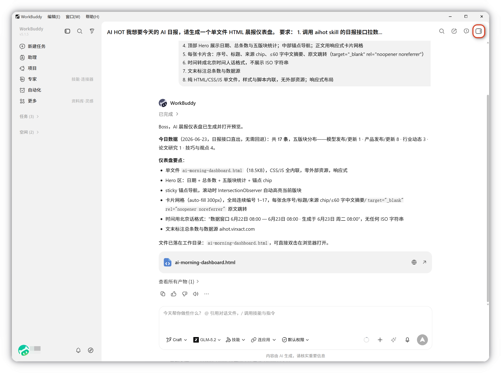
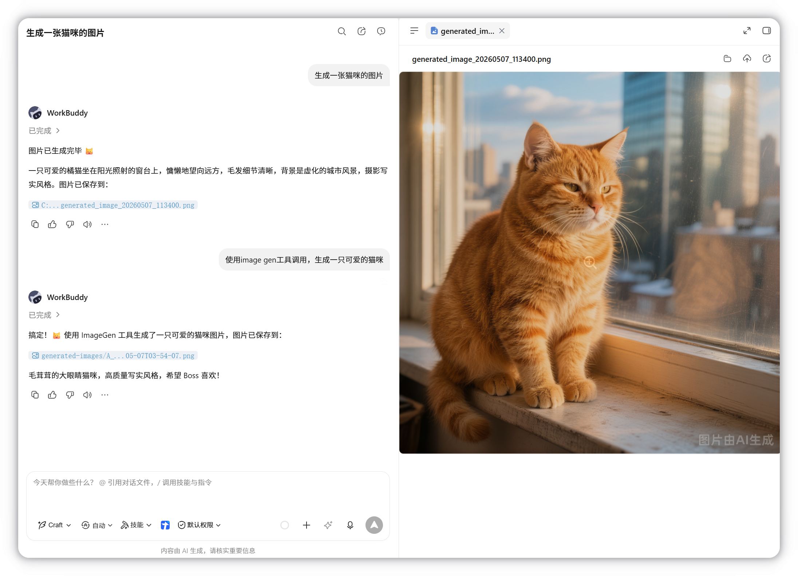
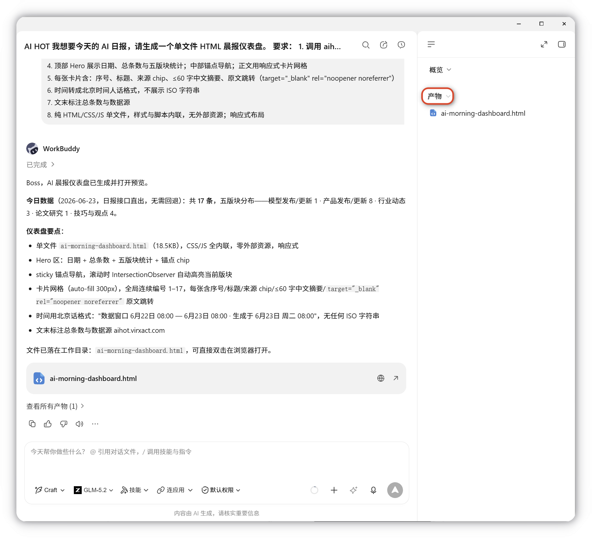
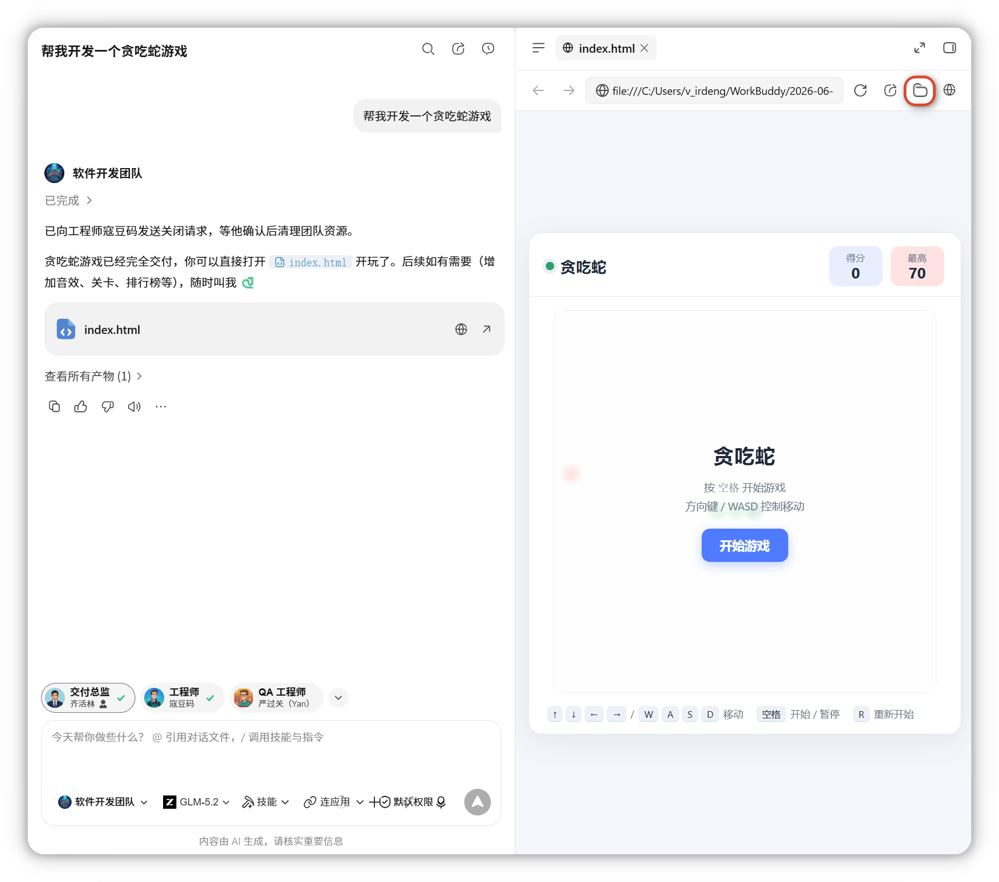
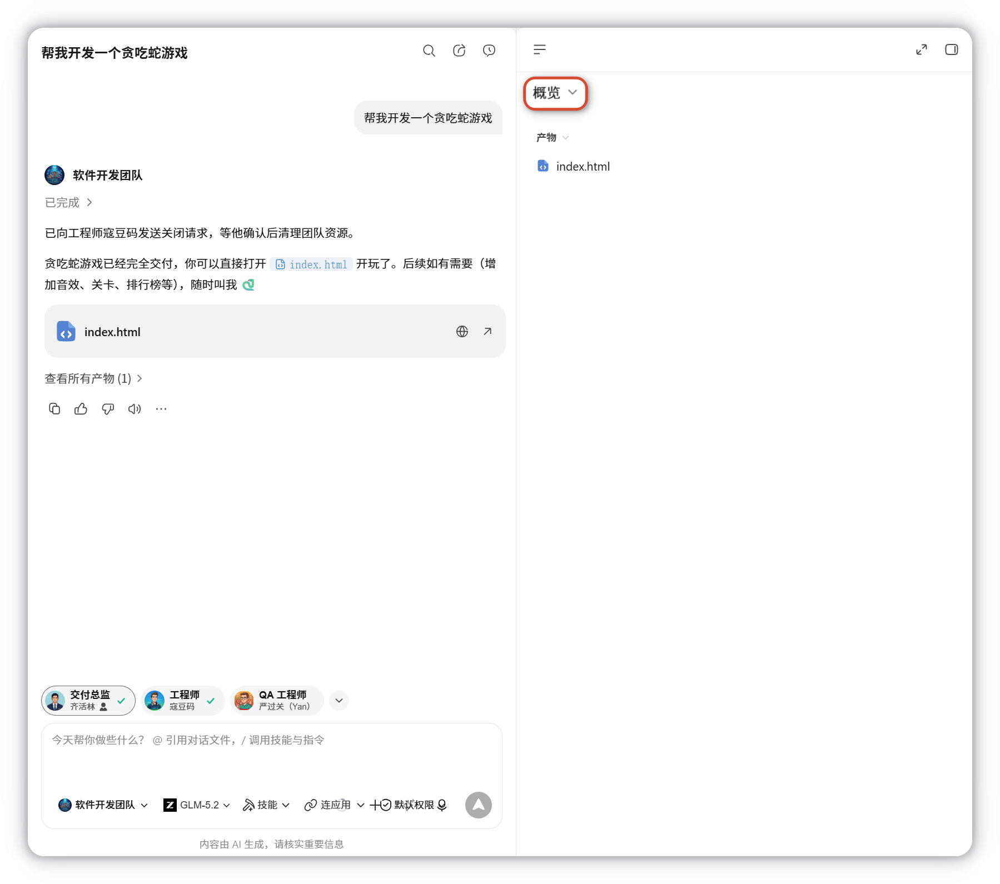
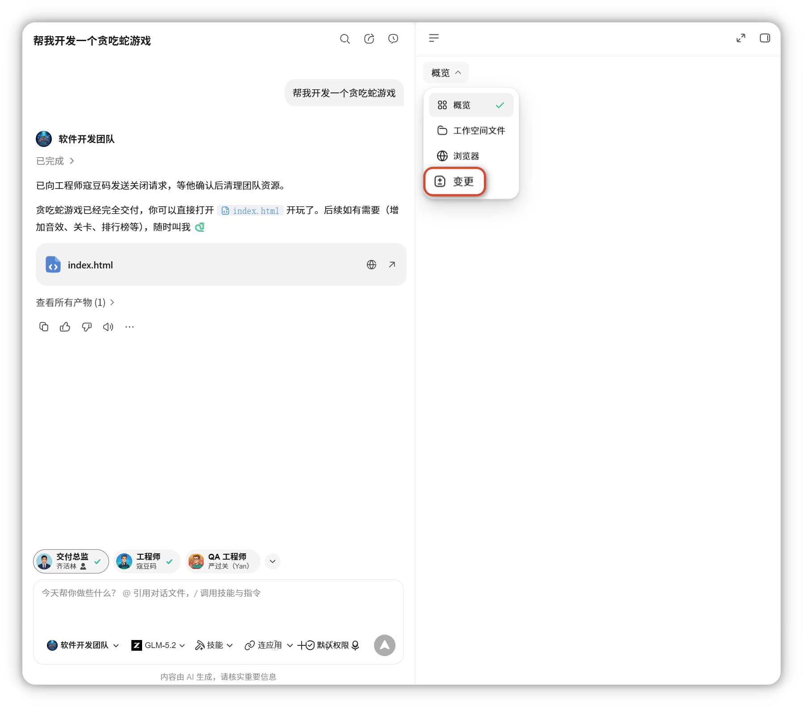
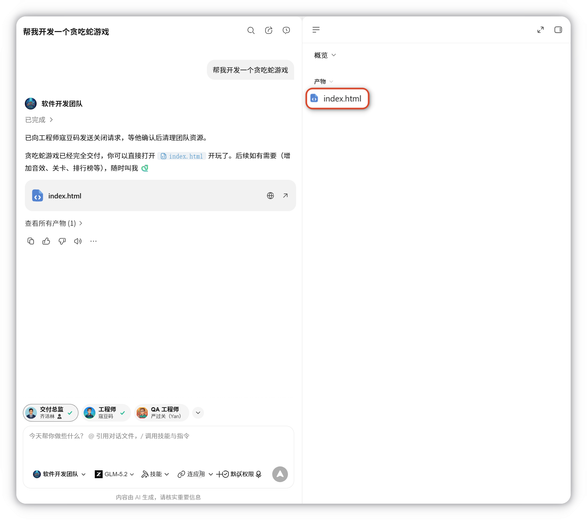

右侧边栏
简介
右侧边栏用于查看当前任务的产物、文件、变更和预览内容。任务产生对话后，可从右上角展开该面板。

展开后效果，如下图所示：

右侧边栏包含以下四个标签页：
| 标签页 | 功能 |
|---|---|
| 产物 | 查看当前对话中新生成的文件（PPT、PDF、文档等），支持直接预览 |
| 工作空间文件 | 以树状结构展示当前工作目录下的所有文件 |
| 变更 | 记录 AI 对文件的修改，支持差异对比查看新增、删除和修改内容 |
| 浏览器 | 内置浏览器直接预览开发中的网页，无需唤起外部浏览器 |
一、产物
展示当前对话中新生成的文件，点击可查看任务列表及生成内容。

点击 文件夹图标 可在系统文件管理器（macOS Finder / Windows 文件资源管理器）中打开文件所在位置。

二、工作空间文件
以树状结构展示当前工作目录下的所有文件，便于直接浏览。

三、变更
记录 AI 对文件的所有修改，展开可查看具体变更文件，通过差异对比快速确认改动。

四、浏览器
直接预览开发中的网页，无需切换到外部浏览器。
